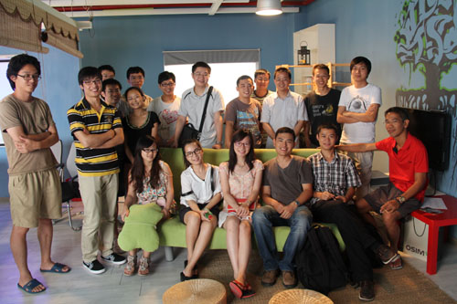

szdiy official web site
深圳DIY社区(SZDIY)以“DIY电子”为主要发展路线，线上采用邮件列表、微博和IRC交流，线下每周四晚在深圳i柴火创客空间聚会。SZDIY鼓励热爱DIY的朋友加入我们，共同分享知识、经验和激情！
每周四晚7点到10点在深圳柴火创客空间举办固定聚会。地点在：南山区华侨城创意园A5栋227号（原东部工业区内）
发送任意内容邮件到szdiy+subscribe@googlegroups.com
即可订阅深圳DIY邮件列表，参与讨论。
Photo Archive: flickr.com/photos/szdiy
Admin Email: szdiyadm[at]gmail.com